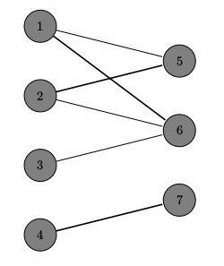

概念
点覆盖 (vertex covering)
- 点覆盖： 一个点集，满足所有边都至少有一个端点在集合中
- 极小点覆盖： 本身是一个点覆盖，但任意一个真子集都不是点覆盖
- 最小点覆盖： 点数最少的点覆盖
- 点覆盖数： 最小点覆盖的点数
边覆盖 (edge covering)
- 边覆盖： 一个边集，满足所有顶点都是集合中至少一条边的一个端点
- 极小边覆盖： 本身是一个边覆盖，但任意一个真子集都不是边覆盖
- 最小边覆盖： 边数最少的边覆盖
- 边覆盖数： 最小边覆盖的边数
团 (clique)
- 团： 一个点集，满足集合中任意两点相邻
- 极大团： 本身是一个团，但再加入任意个点都不再是团
- 最大团： 点数最多的团
- 团数： 最大团的点数
独立集 (independent set)
- 独立集： 一个点集，满足集合中的任意两点都不相邻
- 极大独立集： 本身是一个独立集，但再加入任意个点都不再是独立集
- 最大独立集： 点数最多的独立集
- 独立数： 最大独立集的点数
边独立集 (edge independent set)
- 边独立集： 一个边集，满足集合中的任意两条边都没有公共端点
- 极大边独立集： 本身是一个边独立集，但再加入任意条边都不再是边独立集
- 最大边独立集： 边数最多的边独立集
- 边独立数： 最大边独立集的边数
支配集 (dominating set)
- 支配集： 一个点集，满足集合外其它点都至少有一个相邻的点在集合中
- 极小支配集： 本身是一个支配集，但再加入任意个点都不再是支配集
- 最小支配集： 点数最少的支配集
- 支配数： 最小支配集的点数
边支配集 (edge dominating set)
- 边支配集： 一个边集，满足集合外其它边都至少有一条相邻的边在集合中
- 极小边支配集： 本身是一个边支配集，但再加入任意条边都不再是边支配集
- 最小边支配集： 边数最少的边支配集
- 边支配数： 最小边支配集的边数
匹配 (matching)
- 匹配： 一个两两没有共同顶点的边集，又称 边独立集
- 匹配点： 在匹配中的点，又称 饱和点
- 未匹配点： 不在匹配中的点，又称 未饱和点
- 最大匹配： 边最多的匹配
- 完备匹配： 匹配了二分图较小集合（左侧的点集和右侧点集中较小的点集）的所有点的匹配
- 完美匹配： 匹配了所有点的匹配
- 匹配数： 最大匹配的边数
- 交替路： 图的一条简单路径，满足路径上任意相邻的两条边，一条在匹配内，一条不在匹配内
- 增广路： 起始点与终止点都为未匹配点的交替路
定理
增广路定理： 一个匹配是最大匹配当且仅当不存在增广路。
König定理：最小点覆盖数 $=$ 最大匹配数。证明见 附录
性质
Hint
实现
增广路算法
1 | namespace hungary {/*{{{*/ |
附录
König定理证明
如左图所示，粗线构成了最大匹配。
显然，最大匹配中，
- 任意一个匹配点不会同时和两个以上的未匹配点直接或间接相连，（否则就会存在增广路，这与最大匹配矛盾）。
- 任意一个未配点出发的边都直接连向匹配点（理由同上）
所以，对于每一条匹配边，至多只有一个未匹配点与其直接相邻；若选择与该未匹配点相邻的匹配点作为覆盖点，则可同时覆盖一条匹配边和一条与未匹配点相邻的边。不难发现：将所有与未匹配点直接相邻的匹配点选为覆盖点，并将剩下的没有端点为覆盖点的匹配边中任选一个端点作为覆盖点，则构成最小覆盖集。而这个集合的大小显然和最大匹配个数是相等的。
算法
从二分图左侧所有未匹配点出发，扩展出匈牙利树，并将经过的点标记。则*** 左侧未标记点 与右侧 标记点 ***是最小覆盖集。
实现
1 | namespace hungary {/*{{{*/ |